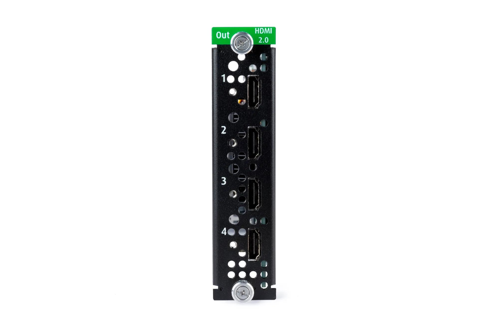

出力側のカード？
端子面のOut表示を確認します。外観が似たQuad input cardは入力側の別製品です。
映像をつなぐ・整える ↗EQUIPMENT / 85
HDMI出力カード
対応プロセッサーから、複数のHDMI画面へ。
KEY SPECIFICATIONS

画像を大きく見る ＋01 / ROLE & FLOW
02 / BEFORE YOUR BRIEF
端子面のOut表示を確認します。外観が似たQuad input cardは入力側の別製品です。
本体、カード、ソフトウェア、映像形式を組み合わせて構成を決めます。
解像度・フレームレート・色形式とHDCP条件を合わせ、使用する表示先をすべて接続して試験します。
03 / CHOOSING THE RIGHT TOOL
発表会の複数画面やモニターへHDMIで出力したい構成に。既存のImagePRO-4Kなど、対応する本体と組み合わせて検討する拡張カードです。
カード単体では映像処理できません。メーカーのEncore3使用時の4K/60Hz・4系統という仕様は、ImagePRO-4Kなど別の本体へそのまま適用できません。
カード交換は本番中に行わず、担当技術者が本体の取扱説明書と対応ソフトウェアを照合して準備します。端子損傷、認識エラー、映像の途切れがあれば使用を止めて構成を見直します。すべての使用画面で映像が安定したら、配線と出力設定を記録します。
本体型式・ソフトウェア、必要なHDMI出力数、各画面の解像度とフレームレート、使用日数、映像ケーブルと設営作業の範囲をお聞かせください。本体・周辺機材・搬入出・設営・本番操作・撤去を分けて、必要な範囲を整理します。